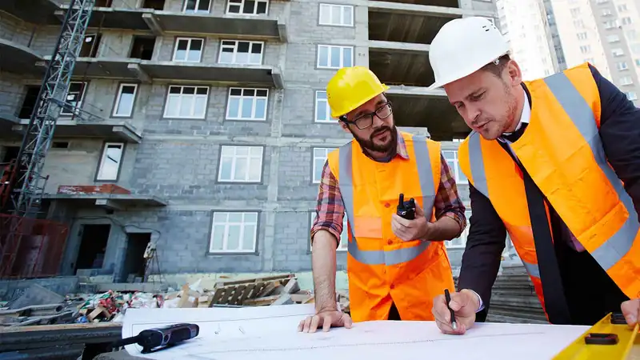
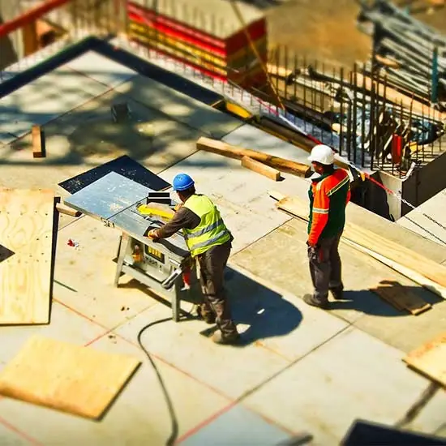
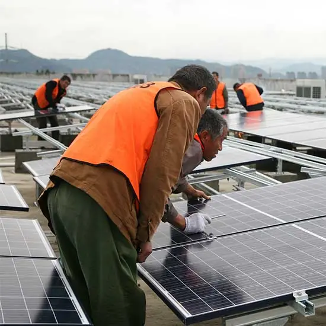
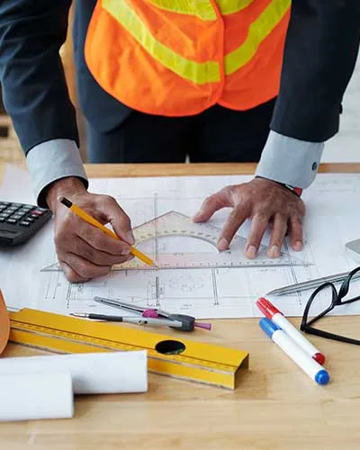
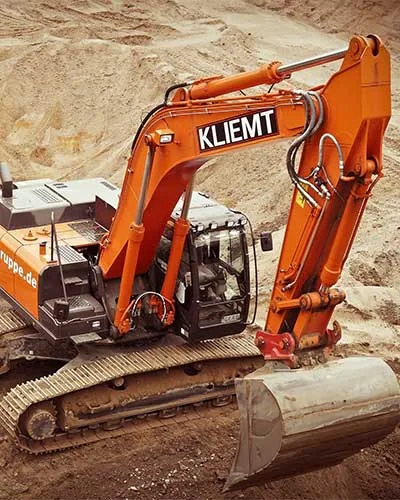
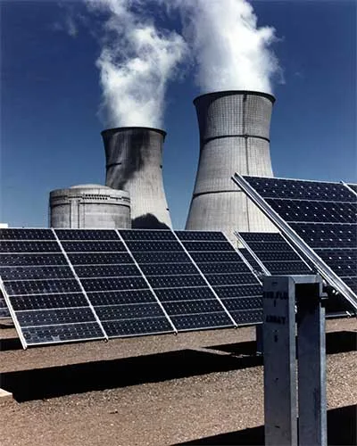
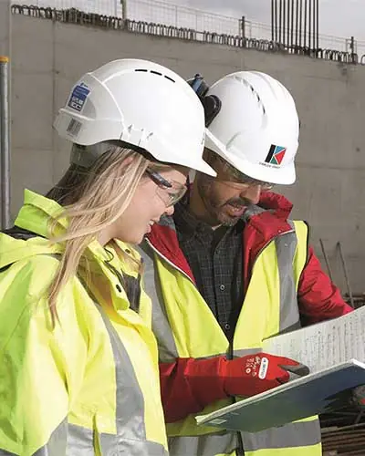

Layanan Kami
Layanan Kami
Solusi Industri Lengkap dalam Satu Atap
Enam lini layanan utama kami dirancang saling melengkapi. Anda bisa memakai satu layanan saja, atau mempercayakan seluruh rangkaian proyek kepada satu tim yang bertanggung jawab penuh.

Konstruksi Sipil Industri
Kami membangun fondasi operasional pabrik Anda: dari bangunan produksi, gudang, hingga pondasi mesin berat yang menuntut presisi tinggi. Setiap tahapan dilengkapi uji material, pengawasan mutu, dan laporan progres berkala.
- Bangunan pabrik, gudang, dan kantor (struktur beton & baja)
- Pondasi mesin, bore pile, dan perbaikan tanah
- Jalan lingkungan, perkerasan beton, dan drainase kawasan
- Renovasi, perkuatan struktur, dan perluasan fasilitas

Energi & Kelistrikan Industri
Kebutuhan listrik pabrik harus stabil dan efisien. Tim elektrikal kami merancang, memasang, dan menguji instalasi mulai dari gardu hingga panel mesin, termasuk solusi energi terbarukan untuk menekan biaya operasional.
- Instalasi tegangan menengah & rendah, panel LVMDP/MCC
- PLTS atap (on-grid) dan audit efisiensi energi
- Genset, UPS, sistem grounding, dan proteksi petir
- Pengujian, komisioning, dan dokumentasi sertifikasi
Perpipaan & Pengolahan Air
Dari jalur proses hingga utilitas, sistem perpipaan harus bebas bocor dan tahan tekanan. Kami juga membangun instalasi pengolahan air bersih dan limbah agar operasional pabrik patuh terhadap regulasi lingkungan.
- Perpipaan proses, utilitas, hydrant, dan fire protection
- Pengelasan bersertifikat, uji hidrostatik, dan radiografi
- Water treatment plant (WTP) dan IPAL industri
- Penggantian jalur pipa tanpa menghentikan produksi lama

Desain Teknik dan Rekayasa
Hasil terbaik berawal dari perencanaan yang matang. Tim engineering kami menyiapkan gambar kerja, perhitungan struktur, hingga rencana anggaran biaya yang rapi dan mudah ditinjau pemilik proyek.
- Gambar kerja (shop drawing) dan as-built drawing
- Perhitungan struktur, layout pabrik, dan P&ID
- Rencana anggaran biaya (RAB) dan jadwal proyek
- Value engineering untuk menghemat biaya tanpa mengorbankan mutu

Pekerjaan Tanah dan Alat Berat
Armada alat berat kami siap mendukung penyiapan lahan, penggalian, dan pemadatan. Operator berpengalaman dan perawatan armada yang disiplin memastikan pekerjaan berjalan lancar dan aman.
- Cut & fill, perataan lahan, dan galian pondasi
- Sewa excavator, dump truck, dan alat pemadat (dengan operator)
- Pekerjaan reklamasi dan pengerasan area penumpukan
- Mobilisasi cepat untuk proyek darurat

Utilitas dan Pembangkit
Utilitas yang andal adalah jantung pabrik. Kami mengerjakan sistem uap, udara tekan, pendingin, serta perawatan terjadwal agar peralatan Anda bekerja optimal dan berumur panjang.
- Instalasi dan perawatan boiler, kompresor, serta cooling system
- Pekerjaan shutdown, overhaul, dan turn-around terencana
- Kontrak perawatan tahunan (preventive & predictive)
- Kalibrasi instrumen dan pemantauan kondisi peralatan
Komitmen Kami
Standar Kerja yang Kami Pegang Teguh
Keselamatan Kerja (K3)
Rencana HSE di setiap proyek, induksi pekerja, APD lengkap, dan pengawas K3 di lokasi.
Pengendalian Mutu
Inspection & test plan, uji material, dan dokumen mutu untuk setiap tahap pekerjaan.
Ketepatan Waktu
Jadwal terukur dengan pelaporan mingguan, sehingga Anda selalu tahu progres proyek.
Standar & Sertifikasi
Mengacu pada SNI, ISO, dan peraturan keselamatan serta lingkungan yang berlaku.
Alur Kerja
Dari Konsultasi Sampai Serah Terima
Konsultasi
Diskusi kebutuhan, target, dan anggaran.
Survei & Desain
Kunjungan lokasi dan penyusunan gambar kerja.
Penawaran & Kontrak
RAB transparan dan jadwal yang disepakati.
Eksekusi
Pengerjaan dengan kontrol mutu dan K3.
Serah Terima
Uji fungsi, dokumen, dan garansi.
Skema Kerja Sama
Pilih Model yang Sesuai Kebutuhan
Proyek Turnkey / EPC
Kami menangani seluruh rangkaian: desain, pengadaan, konstruksi, hingga komisioning. Satu kontrak, satu penanggung jawab.
- Satu titik koordinasi
- Harga & jadwal terkunci
- Cocok untuk pabrik baru
Kontrak Perawatan Tahunan
Perawatan terjadwal dan layanan tanggap darurat dengan SLA yang jelas untuk menjaga mesin tetap prima.
- Inspeksi & servis berkala
- Prioritas respons darurat
- Laporan kondisi aset
Konsultasi & Engineering
Butuh second opinion teknis, audit kelayakan, atau gambar kerja saja? Kami bisa membantu secara terpisah.
- Audit kelistrikan & energi
- Gambar kerja & RAB
- Pendampingan teknis
Portofolio
Contoh Proyek yang Telah Kami Kerjakan
Pekerjaan Tanah & Alat Berat
Penyiapan lahan 4 hektare untuk pabrik pengolahan. Cut & fill, pemadatan, dan drainase sementara diselesaikan 12 hari lebih cepat dari target.

Inspeksi & Keselamatan Kerja
Audit kelayakan dan perbaikan area produksi. Pemeriksaan struktur, kelistrikan, dan K3 dengan rekomendasi perbaikan bertahap.
PLTS & Utilitas Pabrik
PLTS atap on-grid untuk kawasan pabrik. Kapasitas terpasang ratusan kWp, menekan tagihan listrik siang hari secara signifikan.
Desain Teknik & Gambar Kerja
Perencanaan perluasan gudang dan area proses. Gambar kerja lengkap, perhitungan struktur, dan RAB yang disetujui pemilik proyek.
FAQ Layanan
Hal yang Sering Ditanyakan Seputar Layanan
Jawaban singkat mengenai harga, material, pembayaran, dan layanan purna jual kami.
Penawaran kami disusun dari RAB yang rinci sehingga setiap komponen biaya jelas. Anda bisa berdiskusi mengenai ruang lingkup dan opsi material untuk menyesuaikan dengan anggaran.
Ya. Kami dapat menyediakan material dari pemasok tepercaya lengkap dengan sertifikat, atau memakai material yang Anda tentukan (owner supply) sesuai kontrak.
Pembayaran umumnya bertahap berdasarkan progres (termin), dimulai dari uang muka. Skema detail ditentukan dalam kontrak sesuai nilai dan durasi proyek.
Bisa. Kami menyusun metode kerja khusus dan jadwal di luar jam sibuk, atau memanfaatkan jadwal shutdown, agar produksi Anda tidak terganggu.
Tentu. Selain garansi pekerjaan, kami menawarkan kontrak perawatan, pelatihan operator, dan dukungan teknis setelah serah terima.
Butuh Layanan yang Tidak Ada di Daftar?
Kami sering menerima pekerjaan khusus. Jelaskan kebutuhan Anda dan kami carikan solusi teknis terbaiknya.